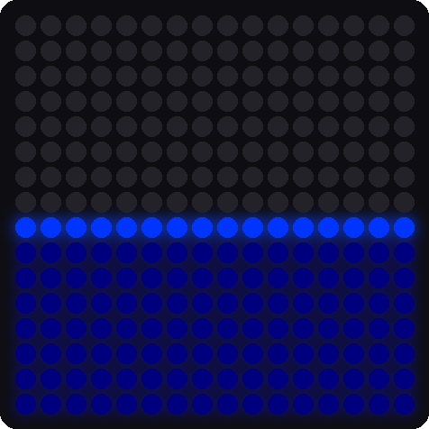
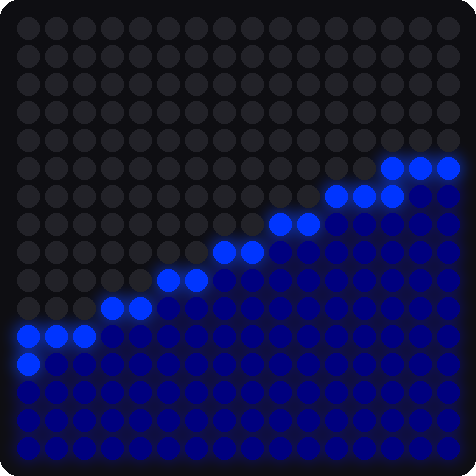

Lab 11: Sloshing Water
Pixel says...
 Ready for a splash? Your matrix is about to become a pan of blue water. Rock it back and forth and
watch the water slosh! Let's light this up!
Ready for a splash? Your matrix is about to become a pan of blue water. Rock it back and forth and
watch the water slosh! Let's light this up!
Program files: 11-sloshing-water.py and sloshing_water.py
What you'll learn
- How a module lets one file borrow code from another
- How to fill exactly half the pixels by sorting
- How a spring makes motion that overshoots and wobbles
- How to change settings and predict the result
What you'll need
- Your whole kit: the matrix and the accelerometer, wired as shown in the Kit Guide
- These files saved on the Pico:
config.py,kit.py,sloshing_water.py, and11-sloshing-water.py - Thonny open and connected to your Pico
- The tilt ideas from Lab 9 and Lab 10
The program
This lab has two files. The short one, 11-sloshing-water.py, is the one you run. It starts the module.
# Test 11: Sloshing Water
# Filename: 11-sloshing-water.py
# Version: 1.1.0
#
# The matrix is a square pan seen from the side, half full of blue water.
# Stand the board upright and the bottom half fills with water. Rock or
# tilt the board and the water sloshes back and forth, then settles.
# The code lives in the module sloshing_water.py (with the shared helpers
# in kit.py) so that program 13 can load it as a mode too. Upload all the
# .py files with ./upload-code.sh before you run this.
# Not yet tested on hardware.
import sloshing_water
print("Test 11: Sloshing Water (version 1.1.0)")
sloshing_water.run()
The real work lives in the module sloshing_water.py. A module is a Python file that other programs can load with import. It also uses kit.py. This helper module sets up the matrix, the sensor, and the buttons for every program from here on. Keeping the water in its own module lets Lab 13 load it as one of its modes.
Run 11-sloshing-water.py. Stand the kit upright, like a picture frame. The bottom half of the matrix fills with blue water. Then rock the kit slowly back and forth. The water tilts, overshoots, and sloshes before it settles.
Test 11: Sloshing Water (version 1.1.0)


These pictures were drawn by a computer simulator, so your real matrix may look a little different.
How it works
A pan seen from the side
Picture the matrix as a square pan, seen from the side. Half of the pixels are water. The matrix has 256 pixels, so the water always uses 128 of them: 256 ÷ 2 = 128. When you tilt the pan, the water changes shape, but the amount never changes.
Find the deepest pixels
def draw_water(nx, ny):
# nx, ny is the downhill direction. A pixel's depth is how far it sits
# downhill. The deepest half of the pixels are water, so the surface
# always lands where exactly half the pan is full.
depth = [across[i] * nx + down[i] * ny + nudge[i] for i in range(NUMBER_PIXELS)]
cutoff = sorted(depth)[NUMBER_PIXELS - WATER_PIXELS]
for i in range(NUMBER_PIXELS):
below_surface = depth[i] - cutoff
if below_surface < 0:
kit.strip[pixel_index[i]] = kit.OFF
elif below_surface < SURFACE_THICKNESS:
kit.strip[pixel_index[i]] = SURFACE_COLOR
else:
kit.strip[pixel_index[i]] = WATER_COLOR
kit.strip.write()
The numbers nx and ny point downhill. For each pixel, depth tells how far downhill it sits. Standing upright, nx is 0 and ny is 1. Then the depth is just the row number, so the bottom row is deepest.
Here is the clever part. The line sorted(depth) puts all 256 depths in order from smallest to biggest. The number at position 128 becomes the cutoff. Every pixel at or deeper than the cutoff is water. That is exactly 128 pixels, however the pan is tilted.
The tiny nudge number added to each depth breaks ties, so two pixels never have exactly the same depth. The pixels just below the surface get the brighter SURFACE_COLOR, and that makes the shiny top line.
Key idea
Sorting solves the "exactly half" problem. Instead of figuring out where the line should go, the program lines up all the pixels and picks the middle.
The water follows on a spring
vx += (SPRING * (target_x - sx) - DAMPING * vx) * dt
vy += (SPRING * (target_y - sy) - DAMPING * vy) * dt
sx += vx * dt
sy += vy * dt
If the water always pointed exactly downhill, it would flip instantly and look stiff. Real water is lazy. So the program uses a spring, like a weight hanging on a rubber band. Gravity (the target) is where the weight is pulled to. The water's own idea of "down" (sx and sy) is the weight on the band.
SPRING * (target_x - sx)pulls the water toward the real down. A biggerSPRINGpulls harder.DAMPING * vxis friction. It slows the motion down. A biggerDAMPINGstops the wobble sooner.vxis the speed, andsxis the position. Each trip through the loop, the speed changes a little, and then the position changes a little.
With a small DAMPING, the water overshoots, swings back, and rings a few times. That is the slosh you see.
What if the board is flat?
while True:
gx, gy, size = read_pull()
if size >= MIN_TILT:
target_x = gx
target_y = gy
When the kit lies flat, there is no "downhill" along the board, so the numbers are tiny and jumpy. The check size >= MIN_TILT ignores tiny tilts. The water stays where it was until you tilt the board enough.
Try it yourself
Open sloshing_water.py in Thonny, change a number near the top, and save it onto the Pico. Predict first!
- Set
SPRING = 40, thenSPRING = 200. Which one sloshes faster? - Set
DAMPING = 0.5, thenDAMPING = 8. Which one keeps sloshing longer? - Change the amount of water. Set
WATER_PIXELS = NUMBER_PIXELS // 4. How much of the pan is full now? How many pixels is that? - Change the water color. Keep the numbers small, because many pixels light at once.
Check your understanding
- Why does the water always light exactly 128 pixels?
- What does
sorted(depth)do, and why does the program use it? - What do
SPRINGandDAMPINGchange about the water? - Why does the water stay still when the kit lies flat?
Lab complete!
 You built a pan of water out of 256 lights and a sensor! That was real physics in a tiny box.
You built a pan of water out of 256 lights and a sensor! That was real physics in a tiny box.
What's next: In Lab 12: Tilt-a-Maze, you will build a game that makes a new maze for every level.